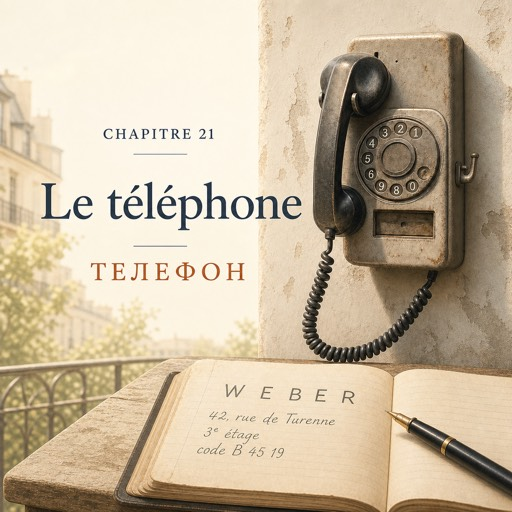

Le lundi 20 octobre — понеділок, 20 жовтня
Le téléphone du magasin est accroché au mur, entre la caisse et l'atelier.
Телефон магазину висить на стіні, між касою та ательє.
Il est gris et vieux. Natalia ne le touche jamais.
Він сірий і старий. Наталя ніколи його не торкається.
C'est Solange qui répond. Toujours.
Відповідає Соланж. Завжди.
Lundi matin. Le rideau de fer monte, les seaux sortent.
Ранок понеділка. Ролета повзе вгору, відра виїжджають надвір.
À huit heures vingt-deux, Karim arrive, écouteurs sur les oreilles.
О восьмій двадцять дві приходить Карім, з навушниками у вухах.
Une cliente choisit des anémones avec Solange.
Клієнтка вибирає анемони разом із Соланж.
Le téléphone sonne. Solange regarde Natalia.
Телефон дзвонить. Соланж дивиться на Наталю.
Un signe de tête vers le mur. Rien d'autre.
Кивок у бік стіни. Більше нічого.
Deuxième sonnerie. Au téléphone, il n'y a pas les mains, pas les fleurs. Seulement la voix.
Другий дзвінок. У телефоні немає рук, немає квітів. Тільки голос.
Troisième sonnerie. Natalia prend le téléphone.
Третій дзвінок. Наталя бере слухавку.
— Le Jardin d'Émile, bonjour.
— «Le Jardin d'Émile», добрий день.
La phrase sort toute seule. Elle l'a entendue cent fois.
Фраза виходить сама. Вона чула її сто разів.
— Bonjour, madame. Je voudrais passer une commande. Vous faites les livraisons ?
— Добрий день, мадам. Я хотів би зробити замовлення. Ви робите доставку?
— Oui. On peut livrer demain matin.
— Так. Ми можемо доставити завтра вранці.
— Parfait. C'est pour une collègue. Demain, c'est son dernier jour au bureau.
— Чудово. Це для колеги. Завтра її останній день у бюро.
— Pour vingt euros, c'est possible ?
— За двадцять євро — можливо?
— Oui. Cinq roses et un peu d'eucalyptus.
— Так. П'ять троянд і трохи евкаліпта.
— Quinze et quatre : dix-neuf euros en tout.
— П'ятнадцять і чотири: разом дев'ятнадцять євро.
— Très bien.
— Дуже добре.
Natalia ouvre le carnet de commandes.
Наталя відкриває зошит замовлень.
— C'est pour qui ?
— Для кого це?
— Pour Madame Weber.
— Для мадам Вебер.
— Pardon... Vous pouvez épeler, s'il vous plaît ?
— Перепрошую… Можете продиктувати по літерах, будь ласка?
— Bien sûr. W comme William. E comme Émile.
— Звичайно. W, як William. E, як Émile.
Comme le magasin.
Як у назві магазину.
— B comme Bernard. E comme Émile. R comme Robert.
— B, як Bernard. E, як Émile. R, як Robert.
— W, E, B, E, R. Weber.
— W, E, B, E, R. Вебер.
— C'est ça. L'adresse : quarante-deux, rue de Turenne, troisième étage.
— Саме так. Адреса: сорок два, рю де Тюренн, третій поверх.
Il parle vite. Trop vite.
Він говорить швидко. Надто швидко.
— Vous pouvez répéter, s'il vous plaît ?
— Можете повторити, будь ласка?
— Quarante-deux, rue de Turenne. Au troisième étage.
— Сорок два, рю де Тюренн. Третій поверх.
— Il y a un code ?
— Є код?
— Oui. En bas, à l'interphone : B quarante-cinq dix-neuf.
— Так. Внизу, на домофоні: B сорок п'ять дев'ятнадцять.
— Plus lentement, s'il vous plaît.
— Повільніше, будь ласка.
— B. Quarante-cinq. Dix-neuf.
— B. Сорок п'ять. Дев'ятнадцять.
— B, quarante-cinq, dix-neuf. C'est noté.
— B, сорок п'ять, дев'ятнадцять. Записано.
— Elle est là demain entre neuf et onze heures.
— Вона там завтра між дев'ятою та одинадцятою.
— D'accord. On va livrer entre neuf et onze.
— Добре. Доставимо між дев'ятою та одинадцятою.
— Et c'est de la part de qui ?
— А від кого це?
— De la part de tout le bureau. Vous pouvez l'écrire sur la carte ?
— Від усього бюро. Можете написати це на листівці?
Le stylo ne tremble presque pas.
Ручка майже не тремтить.
— On peut vous joindre à quel numéro ? Pour la livraison.
— За яким номером можна з вами зв'язатися? Для доставки.
Il donne un numéro. Elle le répète, chiffre par chiffre.
Він дає номер. Вона повторює його, цифра за цифрою.
— Merci beaucoup, madame. Bonne journée !
— Дуже дякую, мадам. Гарного дня!
— Bonne journée !
— Гарного дня!
Elle raccroche. Sa main tremble un peu, maintenant.
Вона кладе слухавку. Тепер її рука трохи тремтить.
Elle a demandé trois fois. Le monsieur a répété trois fois. Personne n'est mort.
Вона перепитала тричі. Пан повторив тричі. Ніхто не помер.
Karim lève le pouce. Avec ses écouteurs, il n'a rien entendu. Il a tout vu.
Карім піднімає великий палець. У навушниках він нічого не чув. Але все бачив.
La cliente est partie. Solange prend le carnet et lit lentement : le nom, l'adresse, le code, l'étage, le créneau.
Клієнтка пішла. Соланж бере зошит і повільно читає: ім'я, адреса, код, поверх, часове вікно.
— Tout est là, dit Solange.
— Усе на місці, — каже Соланж.
Elle repose le carnet. C'est tout.
Вона кладе зошит на місце. І все.
Demain matin, Momo va passer.
Завтра вранці заїде Момо.
Momo, c'est le livreur : un scooter, un casque, trois mots par jour.
Момо — це кур'єр: скутер, шолом, три слова на день.
Le bouquet va monter au troisième étage sans elle.
Букет підніметься на третій поверх без неї.
Le soir, dans le petit carnet du tablier, il y a un nom, lettre par lettre : Weber.
Увечері в маленькому блокноті з фартуха — ім'я, літера за літерою: Weber.
Le premier nom du carnet.
Перше ім'я в блокноті.
Elle n'a jamais vu Madame Weber. Mais elle connaît toutes ses lettres.
Вона ніколи не бачила мадам Вебер. Але знає всі її літери.